表示：准备与服务
实际输入与运行：短读与八次冷扫描各计一次准备，同一方案须满足两张订单。分块验收方案仅用于开发验证，不进入游戏提示。Viewport事件，不代表原生输入、前置旅程或真人理解验收。
修复前 · before-zh_CN-prepare-entry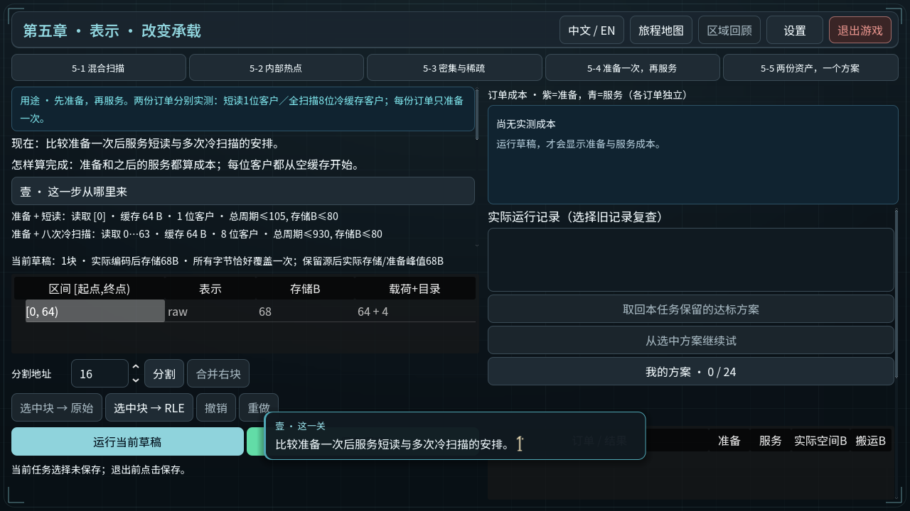
修复前 · before-zh_CN-raw-short-met-scans-unmet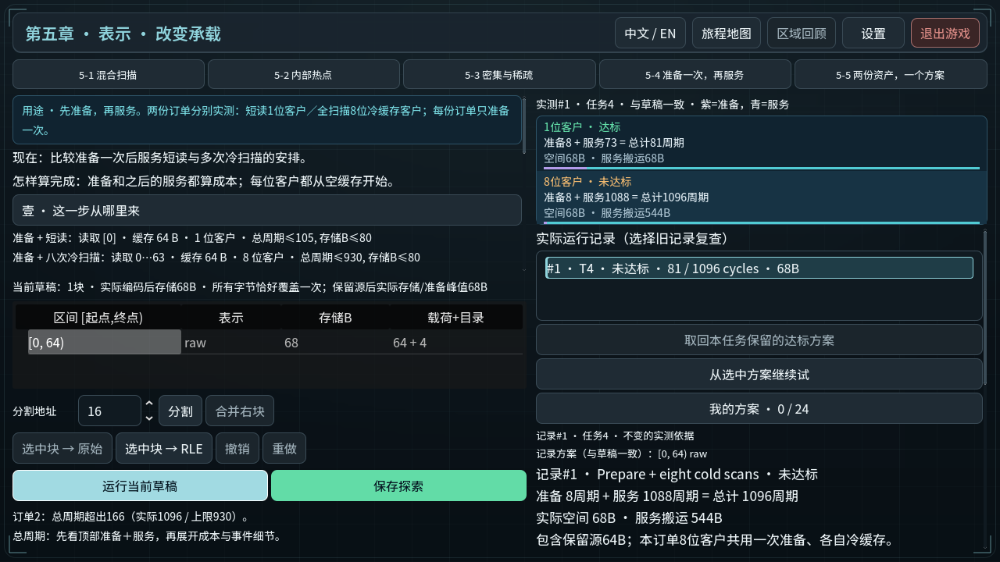
最终实际输入 · en-mixed-both-orders-met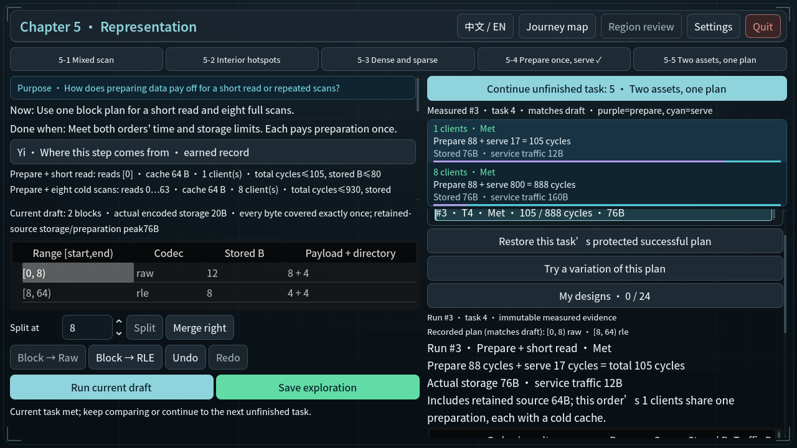
最终实际输入 · en-prepare-entry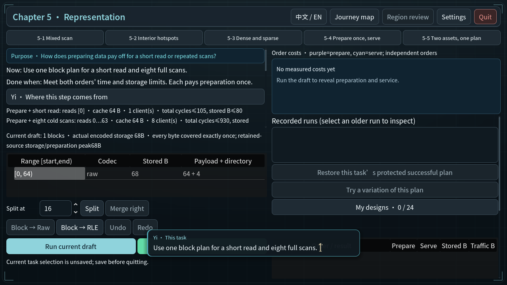
最终实际输入 · en-raw-record-rle-draft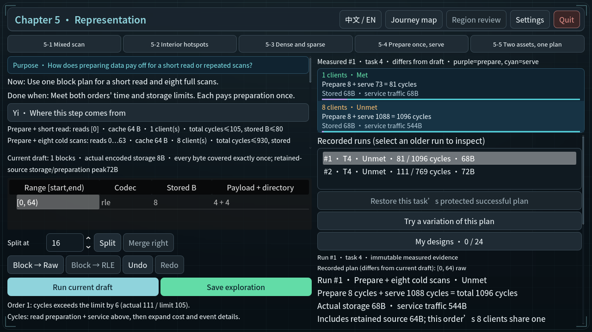
最终实际输入 · en-raw-short-met-scans-unmet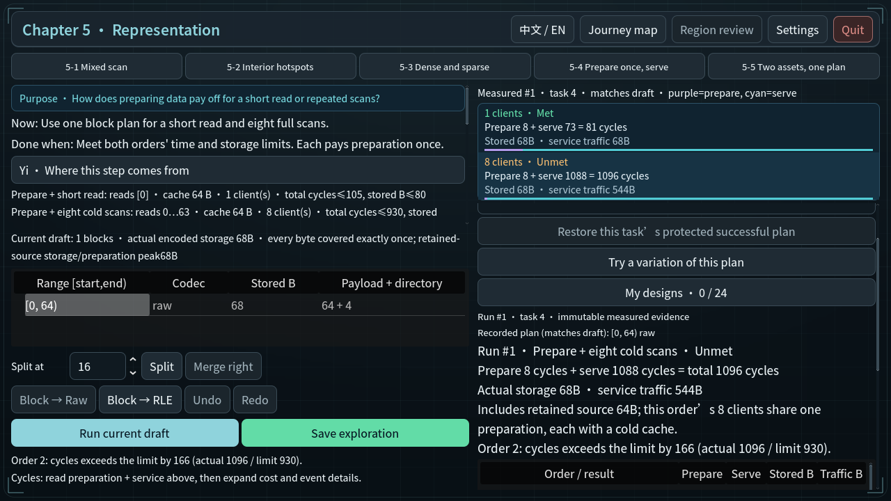
最终实际输入 · en-rle-draft-before-run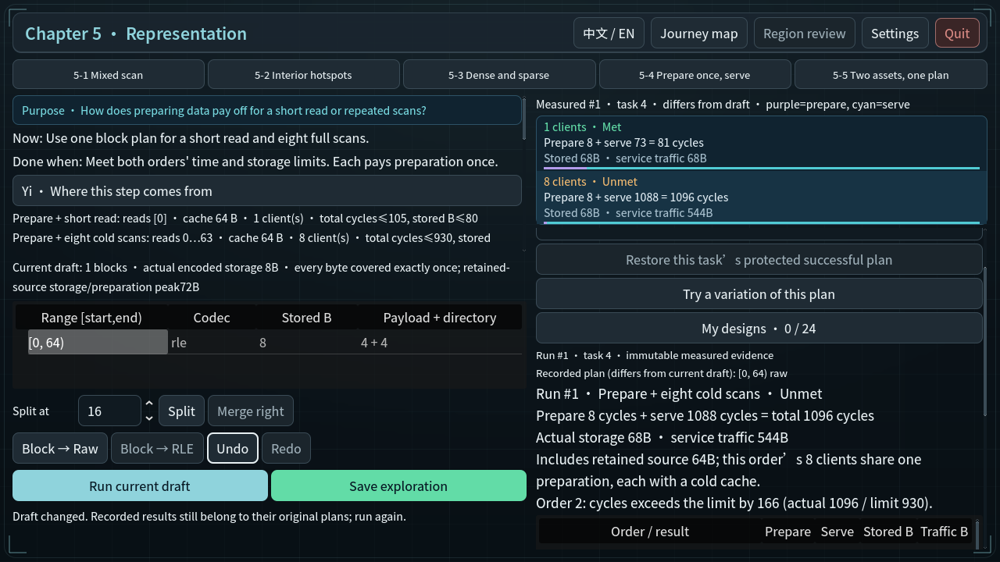
最终实际输入 · en-rle-scans-met-short-unmet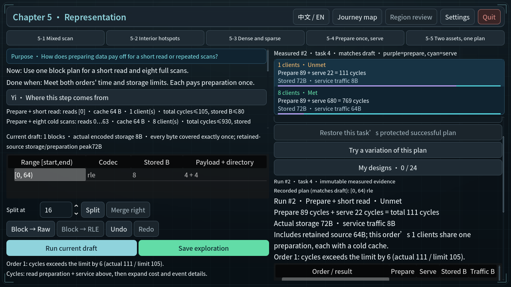
最终实际输入 · en-saved-preparation-result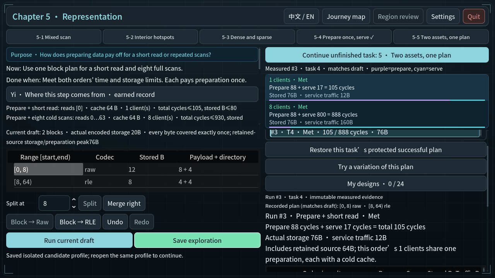
最终实际输入 · zh_CN-mixed-both-orders-met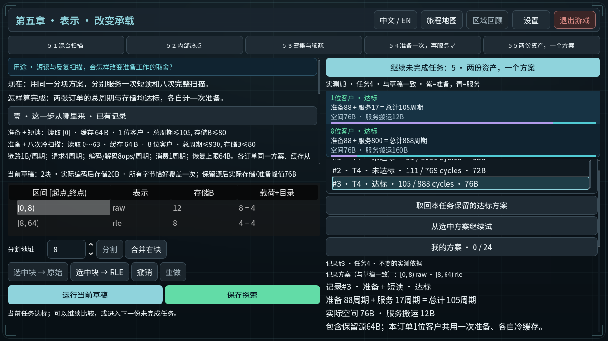
最终实际输入 · zh_CN-prepare-entry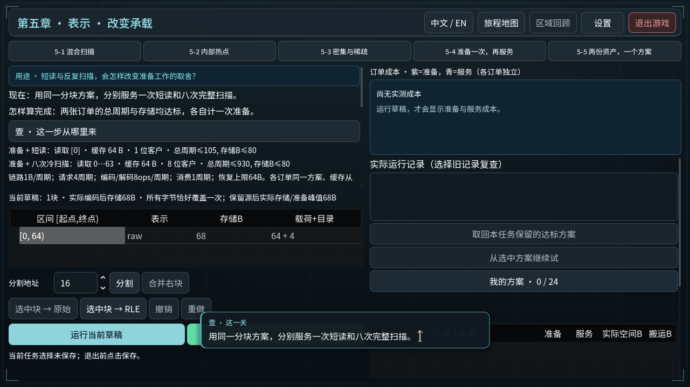
最终实际输入 · zh_CN-raw-record-rle-draft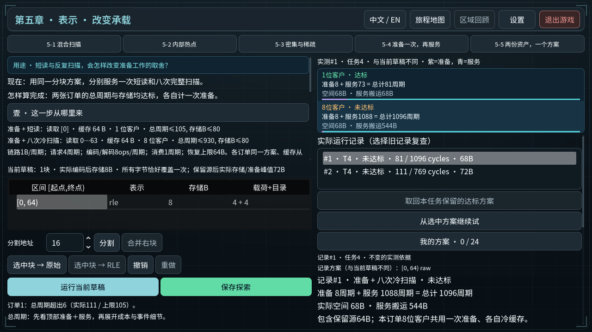
最终实际输入 · zh_CN-raw-short-met-scans-unmet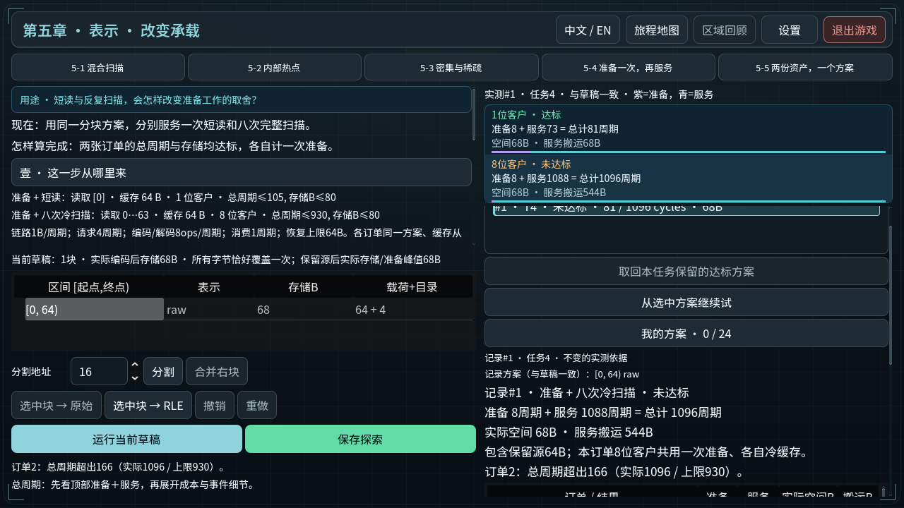
最终实际输入 · zh_CN-rle-draft-before-run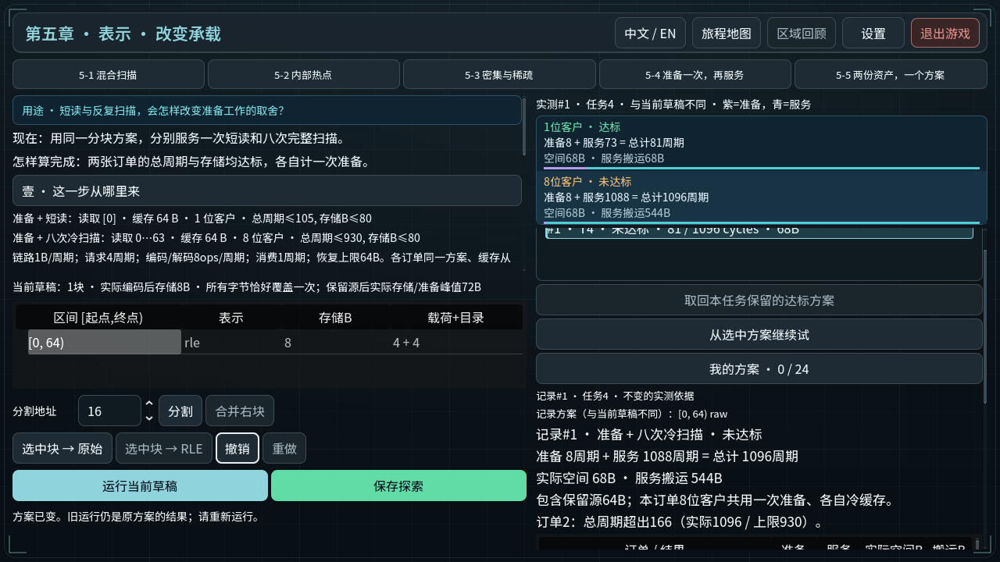
最终实际输入 · zh_CN-rle-scans-met-short-unmet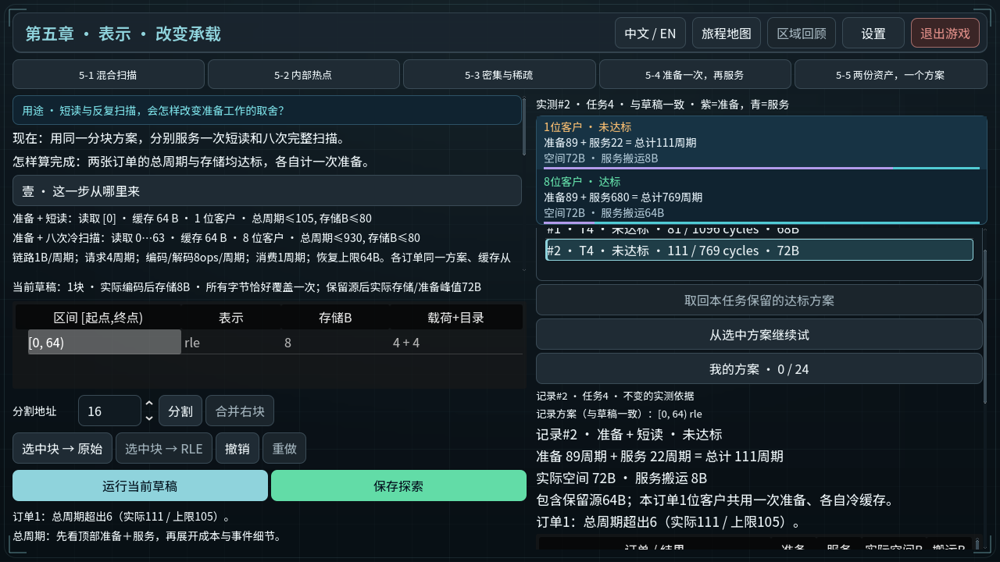
最终实际输入 · zh_CN-saved-preparation-result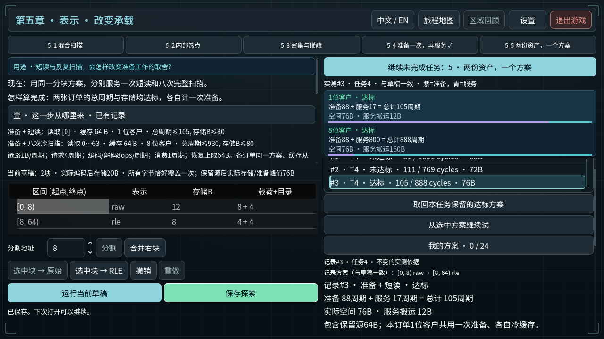